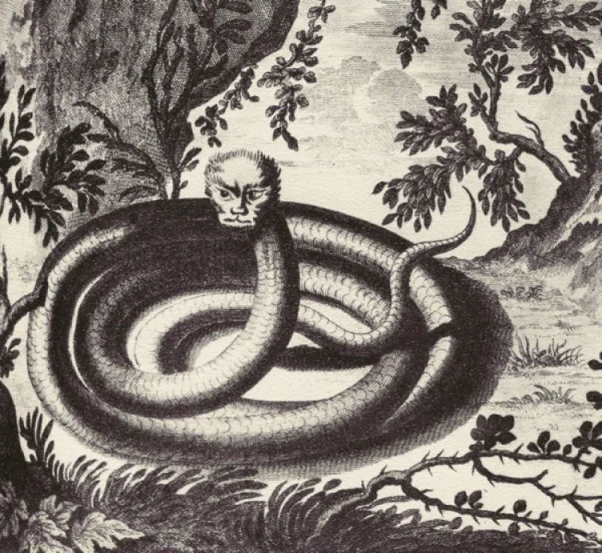

Il Magalasso
Il Magalasso è una creatura mitologica tipica delle zone appenniniche modenesi. Secondo la leggenda, si tratta di un essere misterioso che vive nelle placide acque del canale che fa da fossato per il castello di Spilamberto, ma avvistamenti si sono verificati anche nei territori limitrofi. D'aspetto appare come un serpente con occhi e denti umani, oltre che vaghi rimandi a elementi draghesci. I suoi colori sono descritti come accesi, ma divergono da racconto a racconto. Il temperamento non è aggressivo, per lo più votato alla burla e alla volontà di spaventare per diletto.
Lascia un commento